Code
# [Config] Rutas
df_tab = pd.read_csv("../Data/TABULAR.csv")
df_dx = pd.read_csv('../Data/ANDI_out.csv')Las imágenes utilizadas en este estudio provienen de la iniciativa Alzheimer’s Disease Neuroimaging Initiative (ADNI), un repositorio internacional de neuroimágenes longitudinales. Se seleccionaron exclusivamente imágenes estructurales T1‐ponderadas (MRI) correspondientes a sujetos con diagnóstico deterioro cognitivo leve (MCI) y demencia tipo Alzheimer (AD).
El dataset tabular proviene de los datos clínicos y neuropsicológicos asociados a las mismas visitas de imagen, conteniendo información sociodemográfica, genética, diagnóstica y volumétrica (FreeSurfer).
# [Config] Rutas
df_tab = pd.read_csv("../Data/TABULAR.csv")
df_dx = pd.read_csv('../Data/ANDI_out.csv')# Caracteristicas
print("CARACTERÍSTICAS\n")
print("======================"
f"\n💿 Imágenes: {len(df_tab)}"
f"\n👨🦳 Cantidad de pacientes: {df_dx['sujeto_id'].nunique()}"
f"\n⏺️ Vistas dispobibles: {df_dx['Visit'].nunique()}, en los meses {df_tab['Visita'].unique()}"
"\n======================"
)
# Progeso de la enfermedad
labels_por_sujeto = df_tab.groupby("sujeto_id")["label"].first()
tabla_1 = pd.DataFrame({
"conteo": labels_por_sujeto.value_counts(),
"porcentaje": labels_por_sujeto.value_counts(normalize=True).mul(100).round(2)
})
tabla_1.index = tabla_1.index.map({0: "No progreso", 1: "Progreso"})
display(tabla_1.style.set_caption("Distribución del progreso de la enfermedad"))
# Imágnes
tabla_2 = pd.DataFrame({
"conteo": df_tab["is_dementia"].value_counts(),
"porcentaje": df_tab["is_dementia"].value_counts(normalize=True).mul(100).round(2)
})
tabla_2.index = tabla_2.index.map({0: "MCI", 1: "Dementia"})
display(tabla_2.style.set_caption("Distribución de imágenes con Dementia"))
# Edad
print("======================"
f"\n#️⃣ Edad de los pacientes:"
f"\nMín: {df_tab['Age'].min()} | Máx: {df_tab['Age'].max()} | Mean: {df_tab['Age'].mean().round(2)}"
"\n======================"
)
# Sexo
sex = df_tab.groupby("sujeto_id")["Sexo"].first()
tabla_3 = pd.DataFrame({
"conteo": sex.value_counts(),
"porcentaje": sex.value_counts(normalize=True).mul(100).round(2)
})
tabla_3.index = tabla_3.index.map({0: "Masculino", 1: "Femenino"})
display(tabla_3.style.set_caption("Distribución del sexo"))
# Nivel educativo
educat = {
10: "10 años (básica incompleta)",
12: "12 años (secundaria completa)",
13: "13 años (secundaria + 1 año)",
14: "14 años (preuniversitario)",
16: "16 años (licenciatura)",
17: "17 años (posgrado parcial)",
18: "18 años (maestría)",
19: "19 años (posgrado incompleto)",
20: "20 años (doctorado/profesional)"
}
tabla_4 = pd.DataFrame({
"conteo": df_tab["Educat"].value_counts(),
"porcentaje": df_tab["Educat"].value_counts(normalize=True).mul(100).round(2)
})
tabla_4.index = tabla_4.index.map(educat)
display(tabla_4.style.set_caption("Distribución de nivel educativo"))CARACTERÍSTICAS
======================
💿 Imágenes: 220
👨🦳 Cantidad de pacientes: 51
⏺️ Vistas dispobibles: 7, en los meses [ 6 12 18 24 36 48 60]
======================| conteo | porcentaje | |
|---|---|---|
| label | ||
| No progreso | 31 | 60.780000 |
| Progreso | 20 | 39.220000 |
| conteo | porcentaje | |
|---|---|---|
| is_dementia | ||
| MCI | 158 | 71.820000 |
| Dementia | 62 | 28.180000 |
======================
#️⃣ Edad de los pacientes:
Mín: 61 | Máx: 91 | Mean: 75.79
======================| conteo | porcentaje | |
|---|---|---|
| Sexo | ||
| Masculino | 38 | 74.510000 |
| Femenino | 13 | 25.490000 |
| conteo | porcentaje | |
|---|---|---|
| Educat | ||
| 16 años (licenciatura) | 62 | 28.180000 |
| 18 años (maestría) | 53 | 24.090000 |
| 20 años (doctorado/profesional) | 31 | 14.090000 |
| 19 años (posgrado incompleto) | 19 | 8.640000 |
| 12 años (secundaria completa) | 17 | 7.730000 |
| 14 años (preuniversitario) | 14 | 6.360000 |
| 10 años (básica incompleta) | 13 | 5.910000 |
| 17 años (posgrado parcial) | 6 | 2.730000 |
| 13 años (secundaria + 1 año) | 5 | 2.270000 |
Variables Volumétricas
# []
print("-" * 30)
print("📁 Información general:")
print(f"\nDimensión: {df.shape[0]} Imágenes disponibles × {df.shape[1]} atributos")
print(f"\nTipo de atributos: \n{df.dtypes.value_counts()}")
print("-" * 30)
print(f"👦 {df['sujeto_id'].nunique()} sujetos en estudio")------------------------------
📁 Información general:
Dimensión: 279 Imágenes disponibles × 35 atributos
Tipo de atributos:
float64 22
object 11
int64 1
datetime64[ns] 1
Name: count, dtype: int64
------------------------------
👦 51 sujetos en estudioEl conjunto de datos esta compuesto por 279 imágenes asociadas a 51 sujetos, donde se dispone de multiples imágenes por paciente. En total, se registran 34 atributos por imagen.
print("-" * 30)
print("📁 Valores nulos:")
print(f"Variables con valores nulos:")
nulos = df.isna().sum()
porcentaje = (nulos / len(df)) * 100
tabla_nulos = pd.DataFrame({
"Variable": nulos.index,
"Cantidad_nulos": nulos.values,
"Porcentaje_nulos": porcentaje.round(2)
})
tabla_nulos = tabla_nulos[tabla_nulos["Cantidad_nulos"] > 0]
tabla_nulos = tabla_nulos.sort_values(by="Cantidad_nulos", ascending=False).reset_index(drop=True)
tabla_nulos------------------------------
📁 Valores nulos:
Variables con valores nulos:| Variable | Cantidad_nulos | Porcentaje_nulos | |
|---|---|---|---|
| 0 | Hippocampus | 67 | 24.01 |
| 1 | MidTemp | 67 | 24.01 |
| 2 | Fusiform | 67 | 24.01 |
| 3 | Entorhinal | 67 | 24.01 |
| 4 | ICV | 38 | 13.62 |
| 5 | WholeBrain | 38 | 13.62 |
| 6 | Ventricles | 38 | 13.62 |
| 7 | FAQ | 31 | 11.11 |
| 8 | TRABSCOR | 31 | 11.11 |
| 9 | RAVLT_forgetting | 30 | 10.75 |
| 10 | CDRSB | 30 | 10.75 |
| 11 | DIGITSCOR | 29 | 10.39 |
| 12 | RAVLT_learning | 29 | 10.39 |
| 13 | RAVLT_immediate | 29 | 10.39 |
| 14 | ADAS13 | 29 | 10.39 |
| 15 | MMSE | 28 | 10.04 |
| 16 | DX | 28 | 10.04 |
# DX con valores nulos
print("-" * 30)
print("📁 DX con valores nulos:")
print(f"Registros con DX nulos: {df['DX'].isna().sum()}")
porcentaje_nulo = df["DX"].isna().mean() * 100
print(f"{porcentaje_nulo:.2f}% de los registros no tienen DX asignado.")
df_dx_nulo = df[df["DX"].isna()]
print(f"Diagnosticos nulos en las vistas: {df_dx_nulo['VISCODE'].unique()}")
print("-" * 30)
print(df_dx_nulo[["sujeto_id", "VISCODE", "EXAMDATE", "DX"]])
------------------------------
📁 DX con valores nulos:
Registros con DX nulos: 28
10.04% de los registros no tienen DX asignado.
Diagnosticos nulos en las vistas: [30]
------------------------------
sujeto_id VISCODE EXAMDATE DX
5 007_S_0101 30 2008-07-18 NaN
12 007_S_0128 30 2008-08-20 NaN
18 007_S_0249 30 2008-10-01 NaN
29 014_S_0169 30 2008-09-16 NaN
48 018_S_0142 30 2008-08-20 NaN
54 018_S_0155 30 2008-10-06 NaN
60 021_S_0141 30 2008-09-09 NaN
72 021_S_0273 30 2008-10-13 NaN
78 021_S_0276 30 2008-10-01 NaN
84 022_S_0004 30 2008-05-08 NaN
90 023_S_0042 30 2008-06-24 NaN
97 023_S_0126 30 2008-10-23 NaN
104 027_S_0116 30 2008-08-18 NaN
115 027_S_0256 30 2008-10-16 NaN
122 027_S_0307 30 2008-10-30 NaN
134 032_S_0214 30 2008-10-16 NaN
147 035_S_0204 30 2008-09-26 NaN
157 037_S_0150 30 2008-09-10 NaN
178 067_S_0176 30 2008-11-20 NaN
184 098_S_0160 30 2008-08-20 NaN
190 098_S_0269 30 2008-10-16 NaN
196 099_S_0051 30 2008-06-20 NaN
216 100_S_0006 30 2008-06-12 NaN
228 123_S_0108 30 2008-08-25 NaN
242 128_S_0225 30 2008-11-10 NaN
259 130_S_0285 30 2008-10-21 NaN
266 130_S_0289 30 2008-09-30 NaN
272 136_S_0107 30 2008-09-02 NaNSe identifican 28 registros (10.04%) sin diagnóstico asignado (DX = NaN), todos correspondientes a la visita de seguimiento de los 30 meses (VISCODE = 30). Esto revela un patrón sistemático de ausencia de datos, más que una pérdida aleatoria. Este patrón sugiere que la ausencia del diagnóstico no está relacionada con un error de captura, sino con la estructura temporal del estudio, donde algunas sesiones pueden incluir únicamente medidas de imagen o datos intermedios sin clasificación clínica.
# [] Formato de imagen - Orientación - Tipo de dato y unidades
shape_counts = df["shape"].value_counts() #Formatos de imagen
orint_counts = df["orientation"].value_counts() #Orientación espacial
tabla_shape= pd.DataFrame({
"Shape": shape_counts.index,
"Imágenes": shape_counts.values
})
tabla_orientarion= pd.DataFrame({
"Orientación": orint_counts.index,
"Imágenes": orint_counts.values
})
print("\nFormatos de imagen:")
print(tabla_shape)
print("\nOrientación:")
print(tabla_orientarion)
print(f"\nTipos de datos {df['datatype'].unique()} \nUnidades {df['units'].unique()}") #Tipo de dato y unidades
Formatos de imagen:
Shape Imágenes
0 (160, 192, 192) 99
1 (166, 256, 256) 89
2 (180, 256, 256) 35
3 (256, 256, 170) 34
4 (256, 256, 184) 9
5 (170, 256, 256) 6
6 (160, 240, 256) 4
7 (176, 256, 256) 1
8 (170, 288, 288) 1
9 (162, 256, 256) 1
Orientación:
Orientación Imágenes
0 ('R', 'A', 'S') 236
1 ('P', 'S', 'R') 43
Tipos de datos ['int16']
Unidades ["('mm', 'sec')"]El conjunto de imágenes presenta una diversidad moderada en sus dimensiones espaciales, con un total de 10 configuraciones distintas de tamaño (shape). El formato más común es (160, 192, 192), correspondiente a 99 imágenes, seguido por (166, 256, 256) con 89 imágenes, lo que indica que existe una variabilidad entre protocolos o escáneres de adquisición. Esta heterogeneidad en las dimensiones (ejes de voxeles) sugiere que las imágenes provienen de diferentes estudios o centros clínicos, posiblemente con distintos parámetros de adquisición. Por tanto, antes de realizar cualquier modelado, será necesario homogeneizar las dimensiones mediante re-escalado o re-muestreo volumétrico para garantizar la comparabilidad entre sujetos.
En cuanto a la orientación espacial, la mayoría de las imágenes (236 de 279) están alineadas bajo el sistema estándar (‘R’, ‘A’, ‘S’), que indica los ejes Right–Anterior–Superior, mientras que un grupo menor (43 imágenes) sigue la orientación (‘P’, ‘S’, ‘R’). Esta diferencia puede generar inconsistencias visuales al entrenar los modelos utilizando a los distintos sujetos, por lo que se tendria que reorientar todas las imagenes a un marco anatómico común.
¿Como interpretar los marcos de Orientación Espacial? - ‘R’, ‘L’: Right / Left (derecha / izquierda). - ‘A’, ‘P’: Anterior / Posterior (frontal / trasera). - ‘S’, ‘I’: Superior / Inferior (arriba / abajo).
Por ejemplo: - (‘R’, ‘A’, ‘S’): Ejes orientados hacia la derecha, adelante y arriba. - (‘P’, ‘S’, ‘R’): Ejes hacia atrás, arriba y derecha — diferente orden y dirección.
# Resoluciones de voxel
voxel_counts = df["voxel_size"].value_counts()
volumen_counts = df["voxel_volume_mm3"].value_counts()
total_counts = df["total_volume"].value_counts()
tabla_voxel= pd.DataFrame({
"Voxel": voxel_counts.index,
"Imágenes": voxel_counts.values
})
tabla_volum= pd.DataFrame({
"Volumen": volumen_counts.index,
"Imágenes": volumen_counts.values
})
tabla_total= pd.DataFrame({
"Volumen total": total_counts.index,
"Imágenes": total_counts.values
})
print("\nResoluciones de voxel:")
print(tabla_voxel)
print("\nVolumen de voxel:")
print(tabla_volum)
print("\nVolumen estimado:")
print(tabla_total)
Resoluciones de voxel:
Voxel Imágenes
0 (1.2, 0.9375, 0.9375) 113
1 (1.2, 1.25, 1.25) 97
2 (0.9375, 0.9375, 1.2) 41
3 (1.1998978, 0.9375, 0.9375) 6
4 (1.2, 1.0, 1.0) 4
5 (1.1996994, 0.9375, 0.9375) 3
6 (1.1996002, 0.9375, 0.9375) 3
7 (1.2, 0.9766, 0.9766) 1
8 (1.2, 0.8680556, 0.8680556) 1
9 (0.9765625, 0.9765625, 1.2) 1
10 (1.1999999, 1.0, 1.0) 1
11 (1.0, 1.0, 1.2) 1
12 (1.2, 0.976562, 0.976562) 1
13 (1.1996994, 0.9766, 0.9766) 1
14 (1.2001953, 0.9375, 0.9375) 1
15 (1.2003021, 0.9375, 0.9375) 1
16 (1.2, 1.2760416, 1.2760416) 1
17 (1.2, 1.3020834, 1.3020834) 1
18 (1.199884, 0.9375, 0.9375) 1
Volumen de voxel:
Volumen Imágenes
0 1.054688 154
1 1.875000 97
2 1.054598 6
3 1.200000 5
4 1.054423 3
5 1.054336 3
6 1.144497 1
7 0.904225 1
8 1.144409 1
9 1.200000 1
10 1.144408 1
11 1.144210 1
12 1.054859 1
13 1.054953 1
14 1.953939 1
15 2.034505 1
16 1.054586 1
Volumen estimado:
Volumen total Imágenes
0 1.105920e+07 97
1 1.147392e+07 73
2 1.175040e+07 37
3 1.244160e+07 34
4 1.271808e+07 9
5 1.147294e+07 6
6 1.179648e+07 4
7 1.147105e+07 3
8 1.147010e+07 3
9 1.147579e+07 1
10 1.244999e+07 1
11 1.244473e+07 1
12 1.244784e+07 1
13 1.245096e+07 1
14 1.152480e+07 1
15 1.200000e+07 1
16 1.336934e+07 1
17 1.384120e+07 1
18 1.275000e+07 1
19 1.275000e+07 1
20 1.174926e+07 1
21 1.119744e+07 1Las imágenes presentan variabilidad en la resolución de voxel, con dos configuraciones predominantes: (1.2, 0.9375, 0.9375) y (1.2, 1.25, 1.25), que abarcan más del 75% del total. Esta diferencia refleja el uso de distintos protocolos o escáneres, lo que hace necesario re-escalar y normalizar las imágenes antes del análisis. Los volúmenes cerebrales estimados (~1.1×10⁷–1.3×10⁷ mm³) son coherentes con medidas anatómicas normales, confirmando una buena calidad de la base de datos.
# Intensidad de imagen
print("Intensidad de la imagen")
print("-" * 30)
# Brillo
resumen_mean = df['mean_intensity'].describe().round(2).to_frame(name='mean_intensity')
resumen_mean.index.name = 'Brillo'
print(resumen_mean)
print("-" * 30)
# Contraste
resumen_std = df['std_intensity'].describe().round(2).to_frame(name='std_intensity')
resumen_std.index.name = 'Contraste'
print(resumen_std)Intensidad de la imagen
------------------------------
mean_intensity
Brillo
count 279.00
mean 32013.94
std 71216.46
min 11.66
25% 101.73
50% 127.50
75% 274.09
max 363261.17
------------------------------
std_intensity
Contraste
count 279.00
mean 47971.67
std 107668.61
min 16.62
25% 132.22
50% 168.22
75% 369.50
max 579786.68El brillo promedio (media de intensidades) es de ≈ 32013 unidades, con una desviación estándar muy alta (71216), y un rango que va desde 11.66 hasta 363261. Esta dispersión indica que las imágenes no se encuentran normalizadas en escala de intensidad, lo cual podría deberse a la combinación de datos provenientes de diferentes escáneres o secuencias de MRI (T1 vs T2). La presencia de valores máximos extremadamente altos sugiere que algunas imágenes podrían estar en diferentes unidades o escalas de cuantificación.
En cuanto al contraste (desviación estándar de intensidades), se observa un valor medio de ≈ 47971, con una desviación estándar también elevada (107668). Este comportamiento refuerza la idea de heterogeneidad radiométrica, donde algunas imágenes presentan distribuciones de intensidad muy planas (bajo contraste), mientras que otras muestran mayor separación entre tejidos.
plt.figure(figsize=(8, 2))
df['mean_intensity'].plot.box(vert=False)
plt.title("Distribución de intensidad media")
plt.xlabel("Brillo")
plt.figure(figsize=(8, 2))
df['std_intensity'].plot.box(vert=False)
plt.title("Distribución de desviación estándar intensidad estándar")
plt.xlabel("Contraste")
plt.show()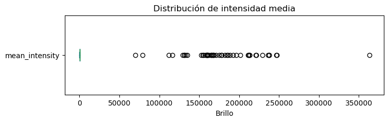
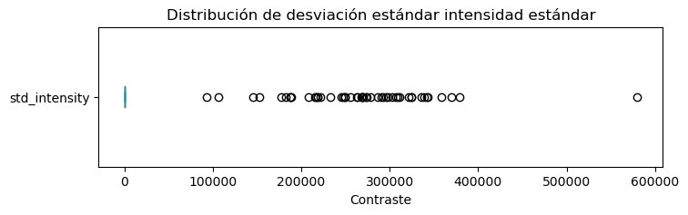
# Configuración mayoritaria de las imágenes
variables = {
"shape": df["shape"],
"orientation": df["orientation"],
"voxel_size": df["voxel_size"],
"voxel_volume_mm3": df["voxel_volume_mm3"],
"total_volume": df["total_volume"]
}
# Construir tabla resumen
resumen = []
for nombre, serie in variables.items():
valor_frecuente = serie.value_counts().idxmax()
cantidad_frecuente = serie.value_counts().max()
cantidad_diferente = (serie != valor_frecuente).sum()
resumen.append({
"Variable": nombre,
"Más frecuente": valor_frecuente,
"Cantidad": cantidad_frecuente,
"Diferentes": cantidad_diferente
})
tabla_resumen = pd.DataFrame(resumen)
print(tabla_resumen) Variable Más frecuente Cantidad Diferentes
0 shape (160, 192, 192) 99 180
1 orientation ('R', 'A', 'S') 236 43
2 voxel_size (1.2, 0.9375, 0.9375) 113 166
3 voxel_volume_mm3 1.054688 154 125
4 total_volume 11059200.0 97 182Al observar la configuración de las imágenes, se aprecia que el conjunto de datos no es completamente uniforme, aunque sí existen algunos patrones claros.
La mayoría de las imágenes comparten una forma de 160 × 192 × 192 voxeles, lo que indica que varias provienen de un mismo protocolo o tipo de escáner. En cuanto a la orientación, la más común es (‘R’, ‘A’, ‘S’), es decir, Right–Anterior–Superior. Esto quiere decir que la mayoría de las imágenes están alineadas en el mismo sentido anatómico, lo cual es positivo, ya que facilita la comparación y el análisis conjunto de los volúmenes.
También se observa que muchos estudios comparten una resolución de voxel de (1.2, 0.9375, 0.9375) mm, con un volumen de aproximadamente 1.05 mm³, lo que refleja una buena calidad espacial de las imágenes. Aun así, la presencia de muchas combinaciones diferentes de resolución y tamaño de voxel indica que será necesario unificar las características espaciales antes de realizar análisis más avanzados o entrenar modelos.
# Imágenes con brillo y contraste outliers
def detectar_outliers_iqr(serie, nombre_columna):
"""
Devuelve un DataFrame con los valores outliers de una columna numérica según el método IQR.
"""
Q1 = serie.quantile(0.25)
Q3 = serie.quantile(0.75)
IQR = Q3 - Q1
limite_inferior = Q1 - 1.5 * IQR
limite_superior = Q3 + 1.5 * IQR
outliers = (serie < limite_inferior) | (serie > limite_superior)
print(f"🔹{nombre_columna}: {outliers.sum()} outliers detectados")
return outliers
df["outlier_mean_intensity"] = detectar_outliers_iqr(df["mean_intensity"], "mean_intensity")
df["outlier_std_intensity"] = detectar_outliers_iqr(df["std_intensity"], "std_intensity")
# Etiqueta combinada de calidad
df["calidad_intensidad"] = "ok"
df.loc[df["outlier_mean_intensity"], "calidad_intensidad"] = "outlier_media"
df.loc[df["outlier_std_intensity"], "calidad_intensidad"] = "outlier_contraste"
df.loc[df["outlier_mean_intensity"] & df["outlier_std_intensity"], "calidad_intensidad"] = "outlier_ambos"
🔹mean_intensity: 50 outliers detectados
🔹std_intensity: 50 outliers detectados# Puntaje de calidad
shape_fr = df["shape"].value_counts().idxmax()
orien_fr = df["orientation"].value_counts().idxmax()
voxel_fr = df["voxel_size"].value_counts().idxmax()
volum_fr = df["voxel_volume_mm3"].value_counts().idxmax()
total_fr = df["total_volume"].value_counts().idxmax()
# Criterios de calidad
df["fail_shape"] = df["shape"] != shape_fr
df["fail_orientation"] = df["orientation"] != orien_fr
df["fail_voxel_size"] = df["voxel_size"] != voxel_fr
df["fail_voxel_volume"] = df["voxel_volume_mm3"] != volum_fr
df["fail_total_volume"] = df["total_volume"] != total_fr
# Outliers de intensidad
def detectar_outliers_iqr(serie):
Q1 = serie.quantile(0.25)
Q3 = serie.quantile(0.75)
IQR = Q3 - Q1
return (serie < Q1 - 1.5 * IQR) | (serie > Q3 + 1.5 * IQR)
df["fail_mean_intensity"] = detectar_outliers_iqr(df["mean_intensity"])
df["fail_std_intensity"] = detectar_outliers_iqr(df["std_intensity"])
# Puntaje total de fallos por imagen
df["puntaje_calidad"] = (
df["fail_shape"].astype(int) +
df["fail_orientation"].astype(int) +
df["fail_voxel_size"].astype(int) +
df["fail_voxel_volume"].astype(int) +
df["fail_total_volume"].astype(int) +
df["fail_mean_intensity"].astype(int) +
df["fail_std_intensity"].astype(int)
)
resumen_puntajes = df["puntaje_calidad"].value_counts().sort_index()
print(" Distribución de puntajes de calidad:")
resumen_puntajes= pd.DataFrame({
"Puntaje": resumen_puntajes.index,
"Imágenes": resumen_puntajes.values
})
print(resumen_puntajes) Distribución de puntajes de calidad:
Puntaje Imágenes
0 2 205
1 3 2
2 4 27
3 6 43
4 7 2El puntaje de calidad asignado a cada imagen indica el nivel de degradación o corrupción presente en ella, donde valores más bajos reflejan mayor calidad visual y, por tanto, menor distorsión.
La gran mayoría de las imágenes (205) tienen un puntaje de 2, lo que indica una alta calidad general del conjunto y poca presencia de artefactos o errores de procesamiento. Solo 2 imágenes presentan un puntaje de 3, y 27 imágenes alcanzan un puntaje de 4, lo que sugiere ligeras degradaciones sin impacto significativo. En contraste, 43 imágenes presentan un puntaje de 6, y 2 imágenes alcanzan 7, reflejando un nivel de corrupción elevado, posiblemente debido a ruido, pérdida de resolución o errores de adquisición.
# Cargar imagen
img = nib.load(r"C:\Users\Hp\MACHINE\MRI\Datos\IMAGES\021_S_0273\MP-RAGE\2006-03-14_10_55_38.0\I11942\ADNI_11M4_BC_4.nii")
data = img.get_fdata()
# Seleccionar 5 cortes equiespaciados en el eje axial (z)
num_cortes = 5
indices = np.linspace(0, data.shape[2] - 1, num_cortes, dtype=int)
# Mostrar los cortes
plt.figure(figsize=(15, 5))
for i, idx in enumerate(indices):
plt.subplot(1, num_cortes, i + 1)
plt.imshow(data[:, :, idx], cmap="gray")
plt.title(f"Corte z={idx}")
plt.axis("off")
plt.suptitle("Cortes axiales seleccionados")
plt.tight_layout()
plt.show()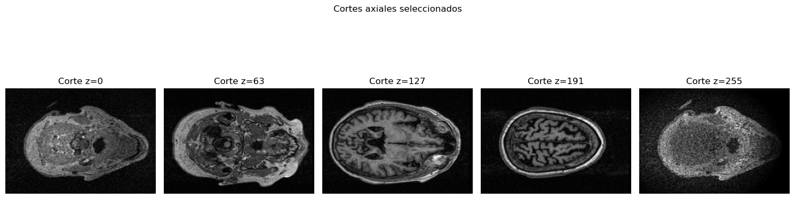
# Crear DataFrame resumen por sujeto
info_sujetos = df.groupby('sujeto_id').agg({
'AGE': 'mean', # Edad
'PTGENDER': 'first', # género
'PTEDUCAT': 'first', # educación
'DX': 'last',
'APOE4': 'first',
}).reset_index()# EDADES
print("-"*30)
print("Edades de los pacientes")
print(info_sujetos['AGE'].describe())
plt.figure(figsize=(8, 2))
info_sujetos['AGE'].plot.box(vert=False)
plt.title("Distribución de la edad")
plt.xlabel("Contraste")
plt.show()------------------------------
Edades de los pacientes
count 51.000000
mean 74.525490
std 6.904574
min 60.300000
25% 70.200000
50% 75.200000
75% 79.500000
max 88.300000
Name: AGE, dtype: float64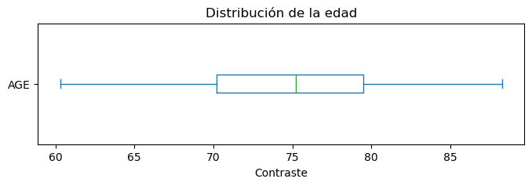
El conjunto de datos incluye información de los 51 pacientes, con una edad promedio de aproximadamente 75 años. Las edades oscilan entre los 60 y 88 años, teniendo en cuenta que la población corresponde principalmente a adultos mayores.
La distribución es relativamente concentrada, con la mitad de los pacientes entre 70 y 80 años, y una desviación estándar de 6.9 años, lo que sugiere una variabilidad moderada en la edad.
# SEXO
print("-"*30)
print("Sexo de los pacientes")
print(info_sujetos['PTGENDER'].value_counts().to_frame())
info_sujetos['PTGENDER'].value_counts().plot.barh()------------------------------
Sexo de los pacientes
count
PTGENDER
Male 38
Female 13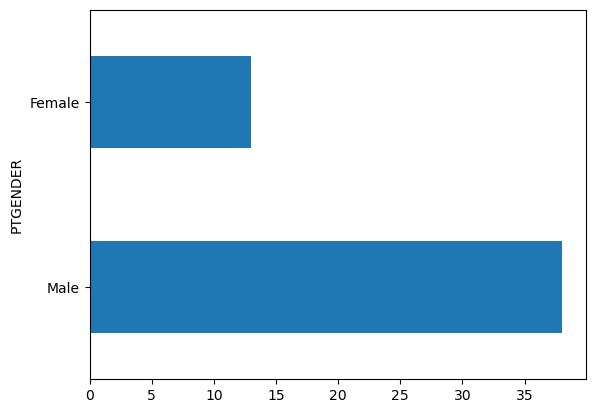
# Educación
print("-"*30)
print("Nivel educativo de los pacientes")
print(info_sujetos['PTEDUCAT'].value_counts().to_frame())
info_sujetos['PTEDUCAT'].value_counts().plot.barh()------------------------------
Nivel educativo de los pacientes
count
PTEDUCAT
Universitario completo 16
Posgrado corto 12
Posgrado avanzado 11
Técnico o incompleto universitario 5
Secundaria completa 4
Primaria o menos 3
La mayoría de los pacientes del estudio presentan un alto nivel educativo. Cerca del 77% cuenta con formación universitaria o de posgrado, lo que sugiere una muestra predominantemente conformada por personas con acceso a educación superior.
En detalle, 16 pacientes (≈32%) completaron estudios universitarios, 12 (≈25%) alcanzaron un posgrado corto, y 11 (≈21%) un posgrado avanzado. Los niveles educativos más bajos, como secundaria o primaria, están presentes en pocos casos (menos del 15% en conjunto).
# APOE4
print("-"*30)
print("Genotipo APOE4")
print(info_sujetos['APOE4'].value_counts().to_frame())
info_sujetos['APOE4'].value_counts().plot.barh()------------------------------
Genotipo APOE4
count
APOE4
0.0 23
1.0 22
2.0 6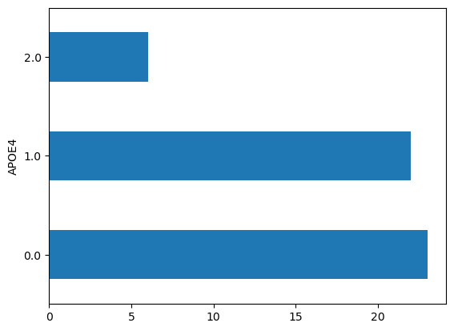
El análisis del genotipo APOE4, un marcador genético estrechamente relacionado con la susceptibilidad al Alzheimer, revela una distribución equilibrada dentro del grupo de pacientes. Cerca de la mitad de ellos no presenta el alelo (23 individuos), mientras que una proporción similar posee una sola copia (22 individuos), y un grupo más reducido, compuesto por seis pacientes, cuenta con dos copias del alelo APOE4. Esta variabilidad genética es relevante, ya que la presencia de una o dos copias de APOE4 se ha asociado con un mayor riesgo de desarrollar Alzheimer y con un posible inicio más temprano de los síntomas.
# Diagnóstico final
print("-"*30)
print("Genotipo DX")
print(info_sujetos['DX'].value_counts().to_frame())
info_sujetos['DX'].value_counts().plot.barh()------------------------------
Genotipo DX
count
DX
MCI 29
Dementia 22
El conjunto de pacientes presenta una distribución moderadamente equilibrada entre los distintos estados clínicos del diagnóstico (DX). La mayoría corresponde a casos de deterioro cognitivo leve (MCI), con 29 pacientes, mientras que los 22 restantes han sido diagnosticados con demencia, fase más avanzada del Alzheimer. Esta composición refleja una muestra representativa de distintas etapas del deterioro cognitivo, lo que permite analizar tanto los cambios estructurales tempranos como los asociados a un daño cerebral más severo.
df["EXAMDATE"] = pd.to_datetime(df["EXAMDATE"])
df["año"] = df["EXAMDATE"].dt.year
df_duracion = df.sort_values(["sujeto_id", "EXAMDATE"]).groupby("sujeto_id").agg(
año_inicio=("año", "first"),
año_final=("año", "last")
).reset_index()
df_duracion["duracion_anios"] = df_duracion["año_final"] - df_duracion["año_inicio"]
print(df_duracion["duracion_anios"].value_counts().sort_index().to_frame())
df_duracion["duracion_anios"].value_counts().sort_index().plot.barh() count
duracion_anios
1 12
2 22
3 16
4 1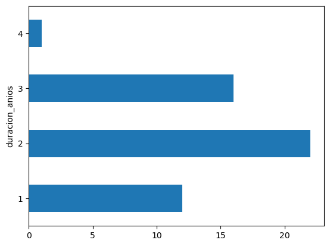
La duración del seguimiento clínico de los pacientes varía entre cero y cuatro años, concentrándose principalmente en períodos intermedios. La mayoría de los sujetos fueron observados durante dos años (22 pacientes) o tres años (16 pacientes), mientras que un grupo menor tuvo un seguimiento de un año (12 pacientes). Solo uno alcanzó los cuatro años de registro.
# Vistas por pacientes
tabla_visitas = (
df
.assign(valor="O") # marcamos presencia
.pivot_table(index="sujeto_id", columns="VISCODE", values="valor", aggfunc="first", fill_value="X")
.sort_index(axis=1)
)
tabla_visitas
conteo_visitas = (tabla_visitas == "O").sum(axis=1)
resumen_visitas = conteo_visitas.value_counts().sort_index()
tabla_resumen = pd.DataFrame({
"Vistas": resumen_visitas.index,
"Pacientes": resumen_visitas.values
})
print(tabla_resumen)
print("Resumen de número de visitas por paciente:")
plt.bar(tabla_resumen["Vistas"], tabla_resumen["Pacientes"], color='green')
plt.title("Imágenes x paciente")
plt.xlabel("Imágenes")
plt.ylabel("Frecuencia") Vistas Pacientes
0 3 6
1 4 7
2 5 10
3 6 13
4 7 15
Resumen de número de visitas por paciente:Text(0, 0.5, 'Frecuencia')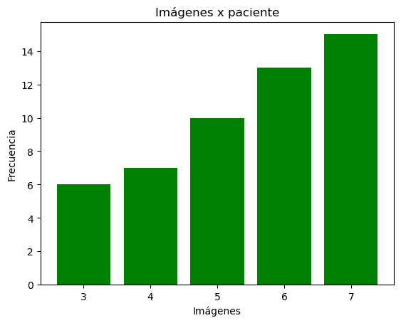
El número de visitas por paciente muestra una distribución progresiva, donde la mayoría de los individuos cuentan con un seguimiento prolongado a lo largo de varias evaluaciones clínicas o sesiones de imagen. En total, 15 pacientes realizaron 7 visitas, constituyendo el grupo más numeroso y representando un seguimiento continuo y completo dentro del estudio. A continuación, le siguen los grupos con 6 visitas (13 pacientes) y 5 visitas (10 pacientes), lo que refleja una buena retención de participantes. En contraste, solo un número reducido de pacientes tuvo 3 o 4 visitas (6 y 7 casos, respectivamente), posiblemente debido a abandonos o inclusión tardía en el estudio.
# Linea de vistas por sujeto
plt.figure(figsize=(10,6))
for sid, grupo in df.groupby('sujeto_id'):
plt.plot(grupo['VISCODE'], [sid]*len(grupo), marker='o', linestyle='-', alpha=0.6)
plt.title('Línea temporal de visitas por sujeto')
plt.xticks(ticks=range(6, 37, 6))
plt.xlabel('Fecha')
plt.ylabel('Sujeto ID')
plt.tight_layout()
plt.show()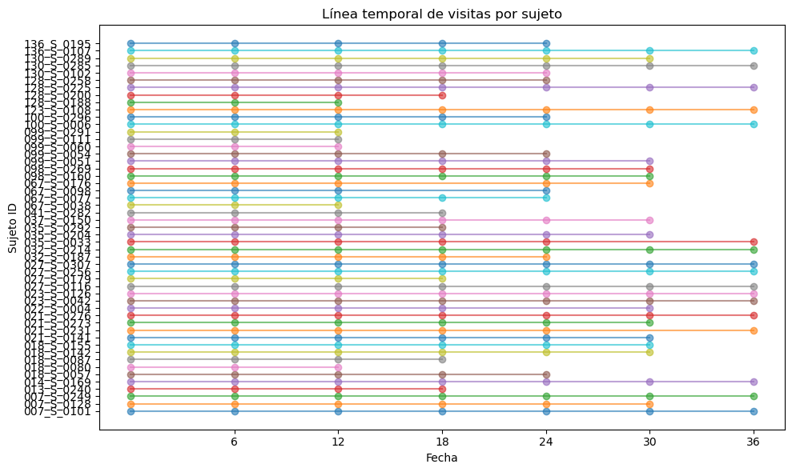
La línea temporal de visitas por sujeto muestra un seguimiento clínico estructurado y constante a lo largo del tiempo para la mayoría de los participantes del estudio. Cada línea representa a un paciente y los puntos indican las fechas en las que se realizaron las evaluaciones o adquisiciones de imágenes.
Se observa que la mayoría de los sujetos cuentan con múltiples visitas distribuidas regularmente, lo que evidencia un protocolo longitudinal bien definido, con mediciones repetidas aproximadamente cada seis meses. Algunos sujetos tienen menos puntos en su línea, lo que podría reflejar pérdida de seguimiento, exclusiones o incorporación tardía en el estudio.
print(df["VISCODE"].value_counts().sort_index().to_frame())
df['VISCODE'].value_counts().sort_index().plot.barh() count
VISCODE
0 51
6 51
12 51
18 43
24 38
30 28
36 17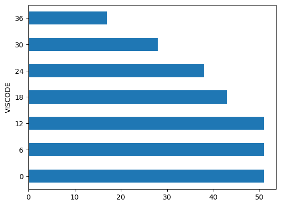
Los valores muestran una reducción progresiva en la cantidad de registros a medida que aumenta el tiempo de seguimiento — de 51 sujetos al inicio, a solo 17 en el mes 36. Esto sugiere pérdida de participantes, algo habitual en estudios clínicos prolongados, ya sea por retiro, fallecimiento o datos incompletos.
# Variables cognitivas
info_cognitiva = df.groupby('sujeto_id').agg({
'CDRSB': ['min', 'mean', 'max'],
'MMSE': ['min', 'mean', 'max'],
'ADAS13': ['min', 'mean', 'max'],
'FAQ': ['min', 'mean', 'max'],
'RAVLT_immediate':['min', 'mean', 'max'],
'RAVLT_learning': ['min', 'mean', 'max'],
'RAVLT_forgetting': ['min', 'mean', 'max'],
'DIGITSCOR': ['min', 'mean', 'max'],
'TRABSCOR': ['min', 'mean', 'max'],
}).reset_index()# Aplanar columnas
info_cognitiva.columns = ['sujeto_id'] + [f"{var}_{stat}" for var, stat in info_cognitiva.columns[1:]]
# Convertir a formato largo
info_long = pd.melt(
info_cognitiva,
id_vars="sujeto_id",
var_name="variable_estadistica",
value_name="valor"
)
# Separar nombre de variable y tipo de estadístico
info_long[["variable", "estadistica"]] = info_long["variable_estadistica"].str.rsplit("_", n=1, expand=True)
variables = info_long["variable"].unique()
for var in variables:
plt.figure(figsize=(6, 5))
sns.boxplot(
data=info_long[info_long["variable"] == var],
x="estadistica",
y="valor",
palette="Set2"
)
plt.title(f"Distribución de {var} por estadístico")
plt.xlabel("Estadístico")
plt.ylabel(var)
plt.grid(axis="y", linestyle="--", alpha=0.3)
plt.tight_layout()
plt.show()C:\Users\Hp\AppData\Local\Temp\ipykernel_34204\2176027057.py:19: FutureWarning:
Passing `palette` without assigning `hue` is deprecated and will be removed in v0.14.0. Assign the `x` variable to `hue` and set `legend=False` for the same effect.
sns.boxplot(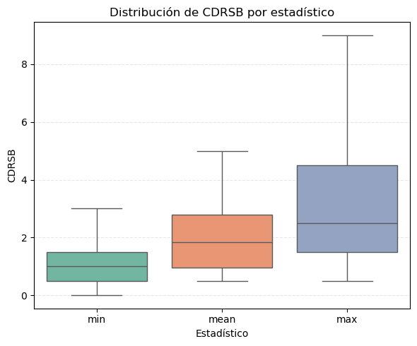
C:\Users\Hp\AppData\Local\Temp\ipykernel_34204\2176027057.py:19: FutureWarning:
Passing `palette` without assigning `hue` is deprecated and will be removed in v0.14.0. Assign the `x` variable to `hue` and set `legend=False` for the same effect.
sns.boxplot(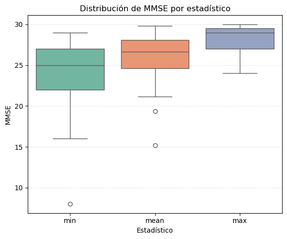
C:\Users\Hp\AppData\Local\Temp\ipykernel_34204\2176027057.py:19: FutureWarning:
Passing `palette` without assigning `hue` is deprecated and will be removed in v0.14.0. Assign the `x` variable to `hue` and set `legend=False` for the same effect.
sns.boxplot(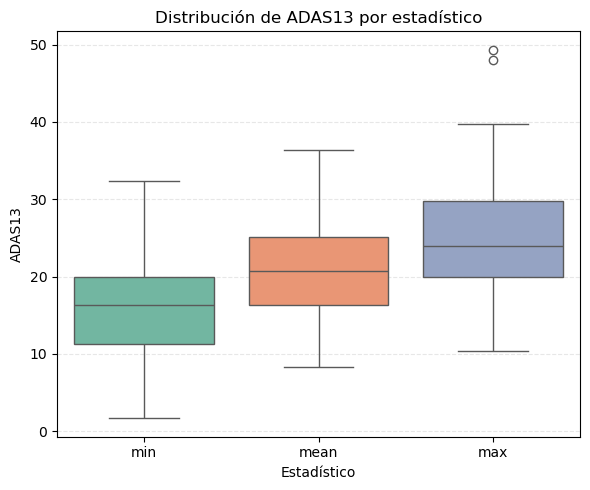
C:\Users\Hp\AppData\Local\Temp\ipykernel_34204\2176027057.py:19: FutureWarning:
Passing `palette` without assigning `hue` is deprecated and will be removed in v0.14.0. Assign the `x` variable to `hue` and set `legend=False` for the same effect.
sns.boxplot(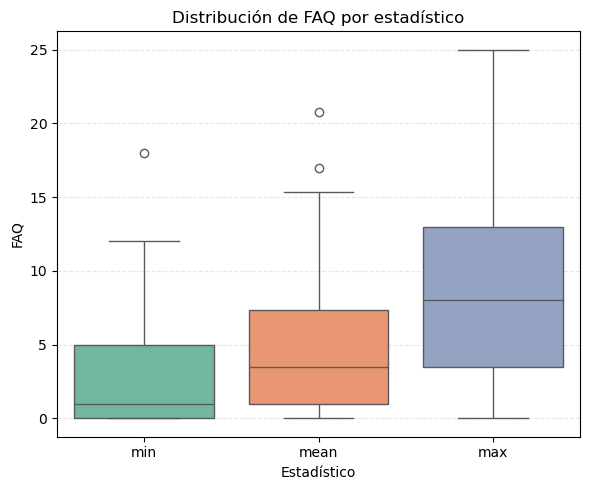
C:\Users\Hp\AppData\Local\Temp\ipykernel_34204\2176027057.py:19: FutureWarning:
Passing `palette` without assigning `hue` is deprecated and will be removed in v0.14.0. Assign the `x` variable to `hue` and set `legend=False` for the same effect.
sns.boxplot(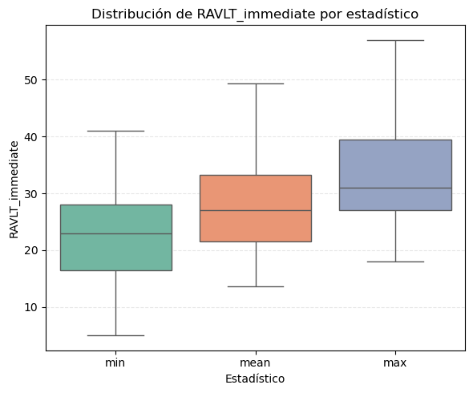
C:\Users\Hp\AppData\Local\Temp\ipykernel_34204\2176027057.py:19: FutureWarning:
Passing `palette` without assigning `hue` is deprecated and will be removed in v0.14.0. Assign the `x` variable to `hue` and set `legend=False` for the same effect.
sns.boxplot(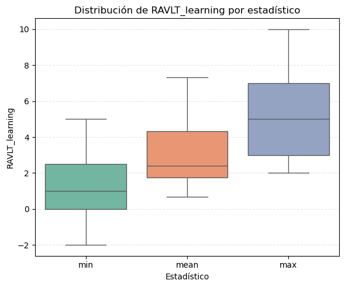
C:\Users\Hp\AppData\Local\Temp\ipykernel_34204\2176027057.py:19: FutureWarning:
Passing `palette` without assigning `hue` is deprecated and will be removed in v0.14.0. Assign the `x` variable to `hue` and set `legend=False` for the same effect.
sns.boxplot(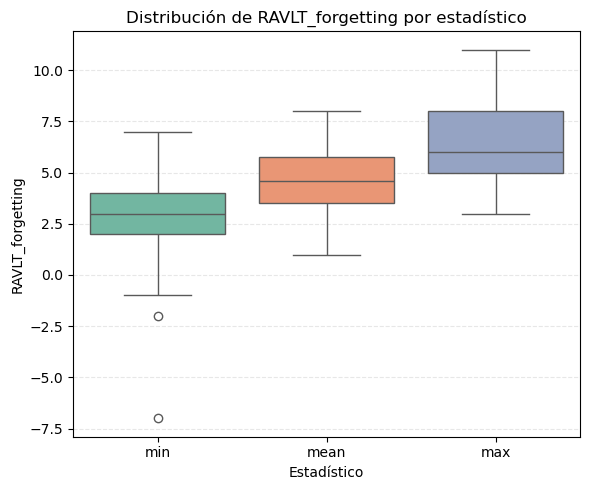
C:\Users\Hp\AppData\Local\Temp\ipykernel_34204\2176027057.py:19: FutureWarning:
Passing `palette` without assigning `hue` is deprecated and will be removed in v0.14.0. Assign the `x` variable to `hue` and set `legend=False` for the same effect.
sns.boxplot(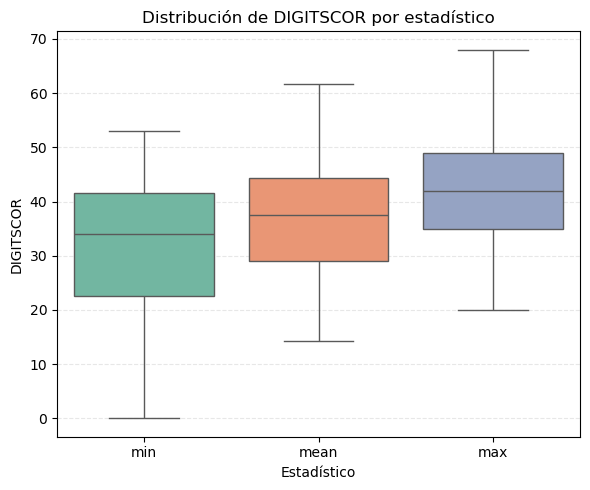
C:\Users\Hp\AppData\Local\Temp\ipykernel_34204\2176027057.py:19: FutureWarning:
Passing `palette` without assigning `hue` is deprecated and will be removed in v0.14.0. Assign the `x` variable to `hue` and set `legend=False` for the same effect.
sns.boxplot(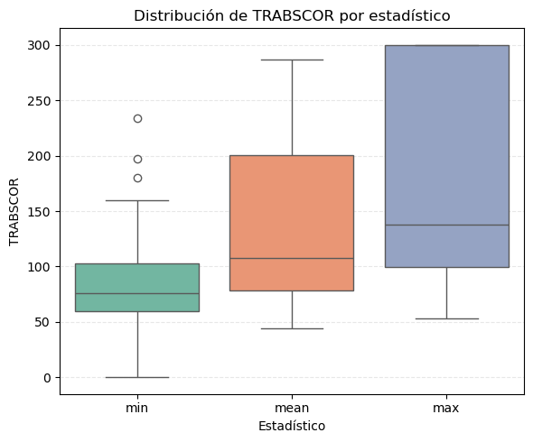
# Agrupar por variable y estadístico
tabla_resumen = info_long.groupby(["variable", "estadistica"])["valor"].agg(["min", "mean", "max"]).round(2).reset_index()
# Ordenar por variable y tipo de estadístico
tabla_resumen = tabla_resumen.sort_values(["variable", "estadistica"])
# Mostrar
tabla_resumen| variable | estadistica | min | mean | max | |
|---|---|---|---|---|---|
| 0 | ADAS13 | max | 10.33 | 25.29 | 49.33 |
| 1 | ADAS13 | mean | 8.33 | 20.74 | 36.40 |
| 2 | ADAS13 | min | 1.67 | 16.27 | 32.33 |
| 3 | CDRSB | max | 0.50 | 2.98 | 9.00 |
| 4 | CDRSB | mean | 0.50 | 1.97 | 5.00 |
| 5 | CDRSB | min | 0.00 | 1.06 | 3.00 |
| 6 | DIGITSCOR | max | 20.00 | 42.22 | 68.00 |
| 7 | DIGITSCOR | mean | 14.20 | 37.28 | 61.67 |
| 8 | DIGITSCOR | min | 0.00 | 31.35 | 53.00 |
| 9 | FAQ | max | 0.00 | 8.53 | 25.00 |
| 10 | FAQ | mean | 0.00 | 5.39 | 20.80 |
| 11 | FAQ | min | 0.00 | 2.67 | 18.00 |
| 12 | MMSE | max | 24.00 | 28.29 | 30.00 |
| 13 | MMSE | mean | 15.20 | 26.11 | 29.83 |
| 14 | MMSE | min | 8.00 | 23.75 | 29.00 |
| 15 | RAVLT_forgetting | max | 3.00 | 6.29 | 11.00 |
| 16 | RAVLT_forgetting | mean | 1.00 | 4.54 | 8.00 |
| 17 | RAVLT_forgetting | min | -7.00 | 2.75 | 7.00 |
| 18 | RAVLT_immediate | max | 18.00 | 33.14 | 57.00 |
| 19 | RAVLT_immediate | mean | 13.60 | 28.05 | 49.33 |
| 20 | RAVLT_immediate | min | 5.00 | 23.27 | 41.00 |
| 21 | RAVLT_learning | max | 2.00 | 5.12 | 10.00 |
| 22 | RAVLT_learning | mean | 0.67 | 3.19 | 7.33 |
| 23 | RAVLT_learning | min | -2.00 | 1.22 | 5.00 |
| 24 | TRABSCOR | max | 53.00 | 178.90 | 300.00 |
| 25 | TRABSCOR | mean | 44.33 | 134.41 | 286.80 |
| 26 | TRABSCOR | min | 0.00 | 88.12 | 234.00 |
Las variables cognitivas evaluadas reflejan distintos dominios del funcionamiento mental, desde la memoria hasta la función ejecutiva.
El MMSE presenta valores promedio entre 15 y 29 puntos, indicando una amplia variabilidad en el estado cognitivo general, desde deterioro leve hasta casi normalidad. De forma consistente, el CDRSB muestra medias entre 1 y 2 puntos, con máximos de hasta 9, lo que sugiere diferencias marcadas en la severidad clínica de la demencia.
El ADAS13, centrado en el deterioro asociado al Alzheimer, promedia entre 16 y 25 puntos, evidenciando un grado de afectación moderado en gran parte de los pacientes. En el ámbito funcional, el FAQ mantiene medias entre 2 y 5 puntos, reflejando una pérdida leve a moderada en las actividades diarias.
Las pruebas de memoria verbal (RAVLT) muestran un rendimiento variable: las puntuaciones inmediatas y de aprendizaje oscilan entre 23 y 33, mientras que el índice de olvido (RAVLT_forgetting) evidencia una retención disminuida en varios casos. Por su parte, la atención y la memoria de trabajo (DIGITSCOR) se mantienen relativamente conservadas, con medias alrededor de 37 puntos.
Finalmente, el TRABSCOR, indicador de la función ejecutiva, alcanza promedios cercanos a 135 segundos, reflejando una ralentización cognitiva en algunos sujetos. En conjunto, los resultados confirman la heterogeneidad del perfil cognitivo en la muestra, coherente con diferentes etapas del deterioro cognitivo y la demencia.
# Variables de de Volúmenes MRI
info_volumen = df.groupby('sujeto_id').agg({
'Ventricles' : ['min', 'mean', 'max'],
'Hippocampus': ['min', 'mean', 'max'],
'WholeBrain': ['min', 'mean', 'max'],
'Entorhinal': ['min', 'mean', 'max'],
'Fusiform': ['min', 'mean', 'max'],
'MidTemp': ['min', 'mean', 'max'],
'ICV': ['min', 'mean', 'max']
}).reset_index()# Aplanar columnas
info_volumen.columns = ['sujeto_id'] + [f"{var}_{stat}" for var, stat in info_volumen.columns[1:]]
# Convertir a formato largo
info_long = pd.melt(
info_volumen,
id_vars="sujeto_id",
var_name="variable_estadistica",
value_name="valor"
)
# Separar nombre de variable y tipo de estadístico
info_long[["variable", "estadistica"]] = info_long["variable_estadistica"].str.rsplit("_", n=1, expand=True)
variables = info_long["variable"].unique()
for var in variables:
plt.figure(figsize=(6, 5))
sns.boxplot(
data=info_long[info_long["variable"] == var],
x="estadistica",
y="valor",
palette="Set2"
)
plt.title(f"Distribución de {var} por estadístico")
plt.xlabel("Estadístico")
plt.ylabel(var)
plt.grid(axis="y", linestyle="--", alpha=0.3)
plt.tight_layout()
plt.show()C:\Users\Hp\AppData\Local\Temp\ipykernel_34204\1002387156.py:19: FutureWarning:
Passing `palette` without assigning `hue` is deprecated and will be removed in v0.14.0. Assign the `x` variable to `hue` and set `legend=False` for the same effect.
sns.boxplot(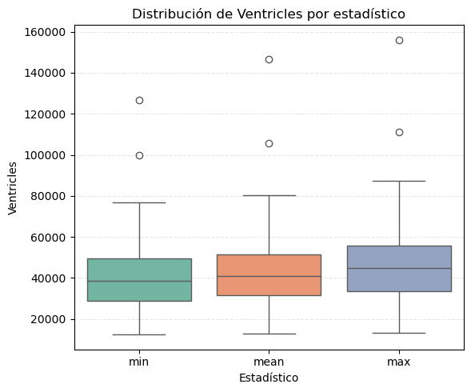
C:\Users\Hp\AppData\Local\Temp\ipykernel_34204\1002387156.py:19: FutureWarning:
Passing `palette` without assigning `hue` is deprecated and will be removed in v0.14.0. Assign the `x` variable to `hue` and set `legend=False` for the same effect.
sns.boxplot(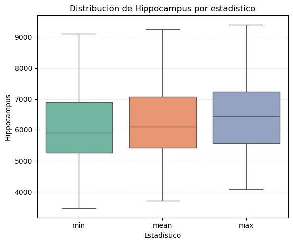
C:\Users\Hp\AppData\Local\Temp\ipykernel_34204\1002387156.py:19: FutureWarning:
Passing `palette` without assigning `hue` is deprecated and will be removed in v0.14.0. Assign the `x` variable to `hue` and set `legend=False` for the same effect.
sns.boxplot(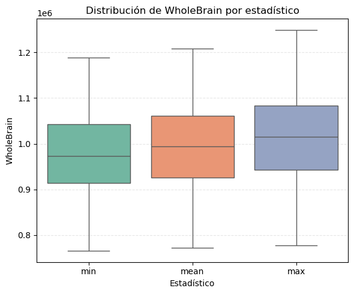
C:\Users\Hp\AppData\Local\Temp\ipykernel_34204\1002387156.py:19: FutureWarning:
Passing `palette` without assigning `hue` is deprecated and will be removed in v0.14.0. Assign the `x` variable to `hue` and set `legend=False` for the same effect.
sns.boxplot(
C:\Users\Hp\AppData\Local\Temp\ipykernel_34204\1002387156.py:19: FutureWarning:
Passing `palette` without assigning `hue` is deprecated and will be removed in v0.14.0. Assign the `x` variable to `hue` and set `legend=False` for the same effect.
sns.boxplot(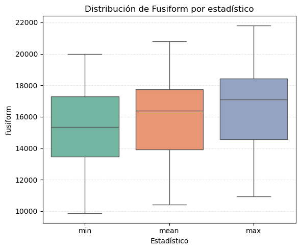
C:\Users\Hp\AppData\Local\Temp\ipykernel_34204\1002387156.py:19: FutureWarning:
Passing `palette` without assigning `hue` is deprecated and will be removed in v0.14.0. Assign the `x` variable to `hue` and set `legend=False` for the same effect.
sns.boxplot(
C:\Users\Hp\AppData\Local\Temp\ipykernel_34204\1002387156.py:19: FutureWarning:
Passing `palette` without assigning `hue` is deprecated and will be removed in v0.14.0. Assign the `x` variable to `hue` and set `legend=False` for the same effect.
sns.boxplot(
# Agrupar por variable y estadístico
tabla_resumen = info_long.groupby(["variable", "estadistica"])["valor"].agg(["min", "mean", "max"]).round(2).reset_index()
# Ordenar por variable y tipo de estadístico
tabla_resumen = tabla_resumen.sort_values(["variable", "estadistica"])
# Mostrar
tabla_resumen| variable | estadistica | min | mean | max | |
|---|---|---|---|---|---|
| 0 | Entorhinal | max | 2023.00 | 3481.71 | 5090.0 |
| 1 | Entorhinal | mean | 1853.00 | 3157.49 | 4511.2 |
| 2 | Entorhinal | min | 1608.00 | 2832.86 | 4215.0 |
| 3 | Fusiform | max | 10946.00 | 16742.86 | 21808.0 |
| 4 | Fusiform | mean | 10424.33 | 16061.54 | 20798.8 |
| 5 | Fusiform | min | 9860.00 | 15365.92 | 19972.0 |
| 6 | Hippocampus | max | 4087.00 | 6431.73 | 9396.0 |
| 7 | Hippocampus | mean | 3717.67 | 6205.67 | 9251.5 |
| 8 | Hippocampus | min | 3471.00 | 5997.59 | 9102.0 |
| 9 | ICV | max | 1325720.00 | 1595814.31 | 1888900.0 |
| 10 | ICV | mean | 1320936.67 | 1585118.96 | 1867338.0 |
| 11 | ICV | min | 1315940.00 | 1575091.76 | 1850260.0 |
| 12 | MidTemp | max | 11241.00 | 18991.55 | 25678.0 |
| 13 | MidTemp | mean | 10291.00 | 18319.15 | 24870.0 |
| 14 | MidTemp | min | 9341.00 | 17627.04 | 23970.0 |
| 15 | Ventricles | max | 13209.00 | 48518.61 | 156066.0 |
| 16 | Ventricles | mean | 12704.00 | 45054.87 | 146665.4 |
| 17 | Ventricles | min | 12346.00 | 41663.00 | 126585.0 |
| 18 | WholeBrain | max | 777166.00 | 1012856.61 | 1249300.0 |
| 19 | WholeBrain | mean | 771940.33 | 994606.37 | 1208020.0 |
| 20 | WholeBrain | min | 765255.00 | 976903.06 | 1188380.0 |
Las variables de volumen derivadas de imágenes de resonancia magnética permiten cuantificar la estructura anatómica del cerebro y detectar cambios asociados con la atrofia y el deterioro cognitivo.
En general, los volúmenes medios observados muestran una distribución coherente con las variaciones esperadas entre sujetos y posibles etapas de deterioro. El volumen intracraneal total (ICV) presenta valores promedio cercanos a 1.59 millones de mm³, siendo una medida anatómica estable que se utiliza para normalizar otras variables de volumen.
El volumen total cerebral (WholeBrain) muestra valores promedio alrededor del millón de mm³, mientras que los ventrículos (Ventricles) presentan una alta variabilidad (media ≈ 47.000 mm³), lo cual es característico de la expansión ventricular asociada a procesos de atrofia cortical.
Regiones críticas vinculadas con la memoria, como el hipocampo (Hippocampus) y la corteza entorrinal (Entorhinal), presentan volúmenes medios de aproximadamente 6.200 mm³ y 3.100 mm³, respectivamente. La reducción en estas áreas se considera uno de los primeros indicadores estructurales del Alzheimer.
Por otro lado, estructuras del lóbulo temporal, como el giro fusiforme (Fusiform) y el lóbulo temporal medio (MidTemp), presentan volúmenes intermedios (entre 15.000 y 18.000 mm³), reflejando su participación en procesos de reconocimiento visual y auditivo.
En conjunto, los resultados muestran una tendencia esperada de atrofia progresiva, principalmente en regiones temporales y de memoria, mientras que ICV y WholeBrain actúan como referencias anatómicas estables para la comparación entre sujetos y sesiones.
df_dx = df.sort_values(["sujeto_id", "VISCODE"]).groupby("sujeto_id").agg(
dx_inicio=("DX", "first"),
dx_final=("DX", "last")
).reset_index()
tabla_transicion = df_dx.groupby(["dx_inicio", "dx_final"]).size().unstack(fill_value=0)
tabla_transicion| dx_final | Dementia | MCI |
|---|---|---|
| dx_inicio | ||
| MCI | 22 | 29 |
El diagnóstico inicial muestra que todos los participantes comenzaron el estudio con deterioro cognitivo leve (MCI). Sin embargo, al finalizar el seguimiento, 22 de ellos progresaron a demencia, mientras que 29 se mantuvieron en la misma condición. Esto refleja una tendencia esperada en la evolución clínica del MCI, donde una proporción significativa de pacientes presenta un empeoramiento cognitivo a lo largo del tiempo, mientras que otros permanecen estables.
df_final = df.sort_values(["sujeto_id", "VISCODE"]).groupby("sujeto_id").agg(
edad_final=("AGE", "last"),
dx_final=("DX", "last")
).reset_index()
tabla_edad_dx = df_final.groupby("dx_final")["edad_final"].describe().round(1)
tabla_edad_dx| count | mean | std | min | 25% | 50% | 75% | max | |
|---|---|---|---|---|---|---|---|---|
| dx_final | ||||||||
| Dementia | 22.0 | 74.2 | 6.8 | 60.3 | 70.4 | 74.7 | 79.2 | 88.3 |
| MCI | 29.0 | 74.8 | 7.1 | 60.7 | 70.3 | 75.2 | 79.4 | 86.1 |
Los pacientes con deterioro cognitivo leve (MCI) presentan una edad promedio de 74.8 años (DE = 7.1), con un rango entre 60.7 y 86.1 años. Por su parte, los pacientes diagnosticados con demencia muestran una edad promedio ligeramente menor, de 74.2 años (DE = 6.8), con un rango entre 60.3 y 88.3 años.
Ambos grupos presentan distribuciones similares en sus valores mínimos y máximos, concentrando el 50 % central de los casos (rango intercuartílico) entre los 70 y 80 años.
df.groupby(["VISCODE"]).mean(numeric_only=True)[[ 'CDRSB', 'MMSE', 'ADAS13', 'FAQ', 'RAVLT_immediate', 'RAVLT_learning',
'RAVLT_forgetting', 'DIGITSCOR', 'TRABSCOR']]| CDRSB | MMSE | ADAS13 | FAQ | RAVLT_immediate | RAVLT_learning | RAVLT_forgetting | DIGITSCOR | TRABSCOR | |
|---|---|---|---|---|---|---|---|---|---|
| VISCODE | |||||||||
| 0 | 1.235294 | 27.372549 | 19.078627 | 3.500000 | 29.862745 | 3.745098 | 4.960784 | 37.725490 | 120.220000 |
| 6 | 1.627451 | 26.411765 | 19.467400 | 4.352941 | 28.137255 | 3.254902 | 4.529412 | 38.882353 | 118.755102 |
| 12 | 1.941176 | 26.333333 | 20.157451 | 5.360000 | 28.627451 | 3.235294 | 4.490196 | 36.901961 | 135.843137 |
| 18 | 2.348837 | 25.581395 | 22.200930 | 6.116279 | 27.714286 | 2.714286 | 4.476190 | 37.069767 | 137.465116 |
| 24 | 2.837838 | 24.815789 | 23.491842 | 7.837838 | 26.447368 | 2.552632 | 4.736842 | 35.289474 | 160.684211 |
| 30 | NaN | NaN | NaN | NaN | NaN | NaN | NaN | NaN | NaN |
| 36 | 2.812500 | 25.647059 | 21.372353 | 7.235294 | 27.529412 | 3.352941 | 4.687500 | 38.562500 | 151.176471 |
El análisis temporal de los puntajes cognitivos muestra una tendencia progresiva hacia el deterioro conforme avanza el seguimiento clínico (de 0 a 36 meses), consistente con la evolución esperada en cohortes con riesgo o diagnóstico de Alzheimer.
En la escala CDRSB (Clinical Dementia Rating Sum of Boxes), que mide la severidad de la demencia, los valores medios aumentan de 1.23 en el inicio a 2.84 al mes 24, indicando una mayor afectación funcional y cognitiva. En contraste, el MMSE (Mini-Mental State Examination), que evalúa el estado cognitivo global, muestra un descenso gradual de 27.3 a 24.8 puntos, reflejando una pérdida de funciones cognitivas generales.
El ADAS13, un índice sensible al deterioro en Alzheimer, pasa de 19.0 a 23.5 puntos en el mismo periodo, reforzando esta tendencia al empeoramiento. De manera paralela, el FAQ, que evalúa la autonomía en actividades diarias, se incrementa de 3.5 a 7.8 puntos, lo cual indica una disminución de la funcionalidad cotidiana.
En cuanto a las pruebas de memoria verbal (RAVLT_immediate, RAVLT_learning y RAVLT_forgetting), se observa un descenso leve en el rendimiento de aprendizaje y recuerdo con el tiempo, mientras que las medidas de atención y funciones ejecutivas (DIGITSCOR y TRABSCOR) presentan fluctuaciones más moderadas, aunque también con una ligera tendencia a la disminución del rendimiento o incremento del tiempo de ejecución.
En conjunto, estos resultados confirman un proceso de deterioro cognitivo progresivo, particularmente evidente en las medidas globales (CDRSB, MMSE, ADAS13) y funcionales (FAQ), coherente con la naturaleza degenerativa de la enfermedad de Alzheimer y su impacto acumulativo a lo largo de los años de seguimiento.
df.groupby(["VISCODE"]).mean(numeric_only=True)[[ 'Ventricles',
'Hippocampus', 'WholeBrain', 'Entorhinal', 'Fusiform', 'MidTemp',
'ICV']]| Ventricles | Hippocampus | WholeBrain | Entorhinal | Fusiform | MidTemp | ICV | |
|---|---|---|---|---|---|---|---|
| VISCODE | |||||||
| 0 | 42340.960784 | 6410.680851 | 1.004484e+06 | 3310.191489 | 16595.851064 | 18974.000000 | 1.582249e+06 |
| 6 | 43703.612245 | 6197.930233 | 9.968302e+05 | 3152.511628 | 16317.046512 | 18627.395349 | 1.585129e+06 |
| 12 | 45051.313725 | 6266.659091 | 9.957942e+05 | 3211.750000 | 16089.818182 | 18337.409091 | 1.585502e+06 |
| 18 | 48546.780488 | 6185.184211 | 9.920210e+05 | 3090.815789 | 16028.815789 | 17961.078947 | 1.587287e+06 |
| 24 | 49118.617647 | 5985.392857 | 9.839078e+05 | 3093.571429 | 15676.285714 | 18249.607143 | 1.592065e+06 |
| 30 | NaN | NaN | NaN | NaN | NaN | NaN | NaN |
| 36 | 43194.400000 | 6010.833333 | 9.965634e+05 | 3006.333333 | 15955.166667 | 18281.166667 | 1.589993e+06 |
Los valores promedio de los volúmenes cerebrales muestran una evolución coherente con los procesos de deterioro cognitivo progresivo. A lo largo de las distintas visitas (VISCODE), se observa un incremento paulatino en el volumen de los ventrículos cerebrales (Ventricles), pasando de aproximadamente 44,600 mm³ al inicio a más de 49,000 mm³ en el mes 24. Este aumento refleja la expansión ventricular asociada a la pérdida de tejido cerebral.
En contraste, el volumen del hipocampo (Hippocampus) presenta una tendencia descendente, disminuyendo desde unos 6,426 mm³ hasta cerca de 5,985 mm³ en el mismo periodo. Esta reducción es consistente con la atrofia hipocampal que caracteriza a los trastornos neurodegenerativos como el Alzheimer. Una trayectoria similar se observa en el entorhinal (Entorhinal), región crucial para la memoria y la navegación espacial, que pasa de valores medios de 3,312 a cerca de 3,093 mm³.
El volumen del cerebro completo (WholeBrain) también disminuye progresivamente, desde aproximadamente 1,004,679 mm³ hasta 983,907 mm³ al mes 24, mientras que estructuras corticales específicas como el fusiforme (Fusiform) y el temporal medio (MidTemp) mantienen una reducción más leve pero constante. En particular, el Fusiform disminuye de 16,595 a 15,676 mm³, y el MidTemp de 18,974 a 18,249 mm³, lo que sugiere pérdida de masa en áreas relacionadas con el procesamiento visual y la memoria semántica.
Por su parte, el volumen intracraneal total (ICV) se mantiene estable a lo largo del tiempo, rondando los 1.58 millones de mm³, como es esperable al ser una medida estructural fija que no varía con la enfermedad sino que sirve de referencia para normalizar otros volúmenes.
En conjunto, estas tendencias reflejan un patrón de atrofia cerebral progresiva, con expansión ventricular y pérdida de volumen en estructuras corticales y subcorticales clave, consistente con la progresión típica del deterioro cognitivo y la enfermedad de Alzheimer.
tabla_dx = df.pivot_table(
index="sujeto_id",
columns="VISCODE",
values="DX",
aggfunc="first" # Asume que hay una sola entrada por sujeto-visita
).fillna("-")
tabla_dx| VISCODE | 0 | 6 | 12 | 18 | 24 | 36 |
|---|---|---|---|---|---|---|
| sujeto_id | ||||||
| 007_S_0101 | MCI | MCI | MCI | MCI | Dementia | Dementia |
| 007_S_0128 | MCI | MCI | MCI | Dementia | Dementia | - |
| 007_S_0249 | MCI | MCI | Dementia | Dementia | Dementia | Dementia |
| 013_S_0240 | MCI | MCI | MCI | Dementia | - | - |
| 014_S_0169 | MCI | MCI | MCI | MCI | MCI | MCI |
| 018_S_0057 | MCI | MCI | MCI | Dementia | Dementia | - |
| 018_S_0080 | MCI | MCI | MCI | - | - | - |
| 018_S_0087 | MCI | MCI | MCI | MCI | - | - |
| 018_S_0142 | MCI | MCI | MCI | MCI | MCI | - |
| 018_S_0155 | MCI | MCI | MCI | MCI | MCI | - |
| 021_S_0141 | MCI | MCI | Dementia | Dementia | Dementia | - |
| 021_S_0231 | MCI | MCI | MCI | MCI | Dementia | Dementia |
| 021_S_0273 | MCI | MCI | MCI | MCI | MCI | - |
| 021_S_0276 | MCI | MCI | MCI | MCI | MCI | MCI |
| 022_S_0004 | MCI | MCI | MCI | MCI | - | - |
| 023_S_0042 | MCI | MCI | Dementia | Dementia | Dementia | Dementia |
| 023_S_0126 | MCI | MCI | MCI | MCI | MCI | Dementia |
| 027_S_0116 | MCI | MCI | MCI | MCI | MCI | MCI |
| 027_S_0179 | MCI | MCI | MCI | Dementia | - | - |
| 027_S_0256 | MCI | Dementia | Dementia | Dementia | Dementia | Dementia |
| 027_S_0307 | MCI | MCI | MCI | MCI | MCI | MCI |
| 032_S_0187 | MCI | MCI | MCI | MCI | Dementia | - |
| 032_S_0214 | MCI | MCI | MCI | MCI | Dementia | Dementia |
| 035_S_0033 | MCI | MCI | MCI | MCI | MCI | MCI |
| 035_S_0204 | MCI | MCI | Dementia | Dementia | Dementia | - |
| 035_S_0292 | MCI | MCI | MCI | MCI | - | - |
| 037_S_0150 | MCI | MCI | MCI | MCI | MCI | - |
| 041_S_0282 | MCI | MCI | MCI | MCI | - | - |
| 067_S_0038 | MCI | MCI | MCI | - | - | - |
| 067_S_0077 | MCI | MCI | Dementia | Dementia | Dementia | - |
| 067_S_0098 | MCI | MCI | MCI | - | MCI | - |
| 067_S_0176 | MCI | MCI | MCI | - | MCI | - |
| 098_S_0160 | MCI | MCI | MCI | MCI | MCI | - |
| 098_S_0269 | MCI | Dementia | Dementia | Dementia | Dementia | - |
| 099_S_0051 | MCI | MCI | MCI | MCI | MCI | - |
| 099_S_0054 | MCI | MCI | Dementia | Dementia | Dementia | - |
| 099_S_0060 | MCI | MCI | MCI | - | - | - |
| 099_S_0111 | MCI | MCI | Dementia | - | - | - |
| 099_S_0291 | MCI | MCI | MCI | - | - | - |
| 100_S_0006 | MCI | MCI | MCI | MCI | MCI | MCI |
| 100_S_0296 | MCI | MCI | MCI | MCI | MCI | - |
| 123_S_0108 | MCI | MCI | MCI | Dementia | Dementia | Dementia |
| 128_S_0188 | MCI | MCI | MCI | - | - | - |
| 128_S_0200 | MCI | MCI | MCI | MCI | - | - |
| 128_S_0225 | MCI | MCI | MCI | MCI | MCI | MCI |
| 128_S_0258 | MCI | MCI | MCI | MCI | Dementia | - |
| 130_S_0102 | MCI | MCI | MCI | MCI | MCI | - |
| 130_S_0285 | MCI | MCI | MCI | MCI | MCI | MCI |
| 130_S_0289 | MCI | MCI | MCI | MCI | Dementia | - |
| 136_S_0107 | MCI | MCI | MCI | MCI | MCI | MCI |
| 136_S_0195 | MCI | MCI | Dementia | Dementia | Dementia | - |
La tabla muestra la progresión longitudinal del diagnóstico clínico (DX) en cada participante (sujeto_id) a lo largo de las distintas visitas (VISCODE), que corresponden a intervalos de seguimiento de 0, 6, 12, 18, 24 y 36 meses.
En la mayoría de los casos, los sujetos inician el estudio con un diagnóstico de deterioro cognitivo leve (MCI), que representa una etapa intermedia entre el envejecimiento cognitivo normal y la demencia. Sin embargo, conforme avanzan las visitas, se observa un número considerable de transiciones hacia el diagnóstico de demencia (Dementia), lo que indica un deterioro progresivo en el estado cognitivo de varios participantes.
Este patrón es evidente en múltiples sujetos (por ejemplo, 007_S_0101, 123_S_0108), quien presenta un cambio de MCI a demencia a partir de las visitas correspondientes a los 18 o 24 meses. Dichas transiciones son indicativas del curso clínico esperado en poblaciones con riesgo de Alzheimer, donde la progresión suele manifestarse gradualmente en un periodo de dos a tres años.
No obstante, también se identifican participantes que mantienen un diagnóstico estable de MCI durante todo el seguimiento (como 014_S_0169, 027_S_0116 o 035_S_0033), lo que sugiere una evolución más lenta o incluso una posible estabilización del deterioro cognitivo.
Asimismo, se observan ausencias de registro (“–”) en algunas visitas, lo que puede deberse a pérdidas de seguimiento, datos faltantes o retiro de los sujetos del estudio, un aspecto común en estudios longitudinales de larga duración.
En conjunto, los datos reflejan la heterogeneidad en la evolución clínica de los pacientes con deterioro cognitivo leve: mientras algunos permanecen estables, otros progresan hacia demencia en distintos puntos del seguimiento.